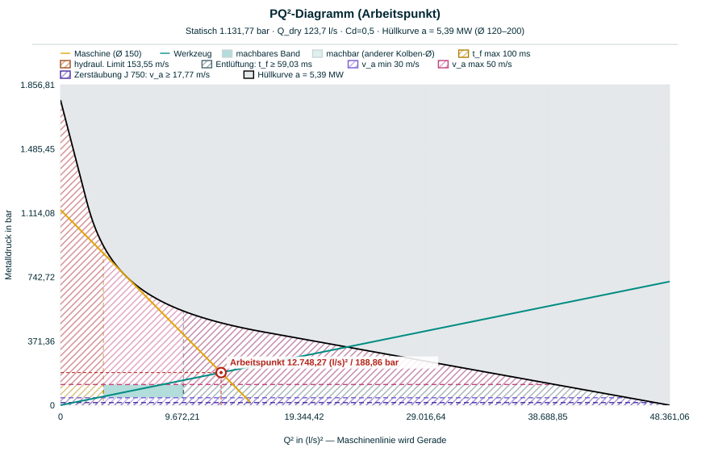
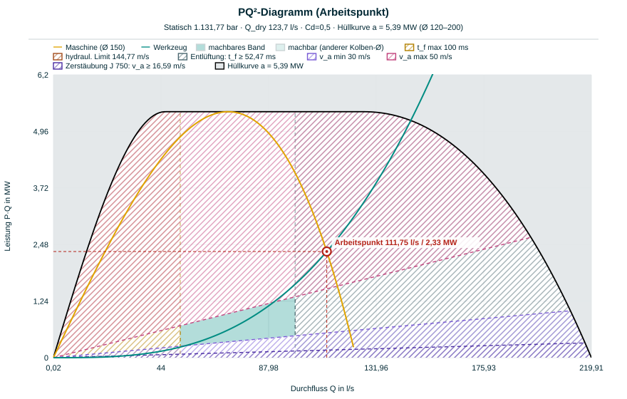
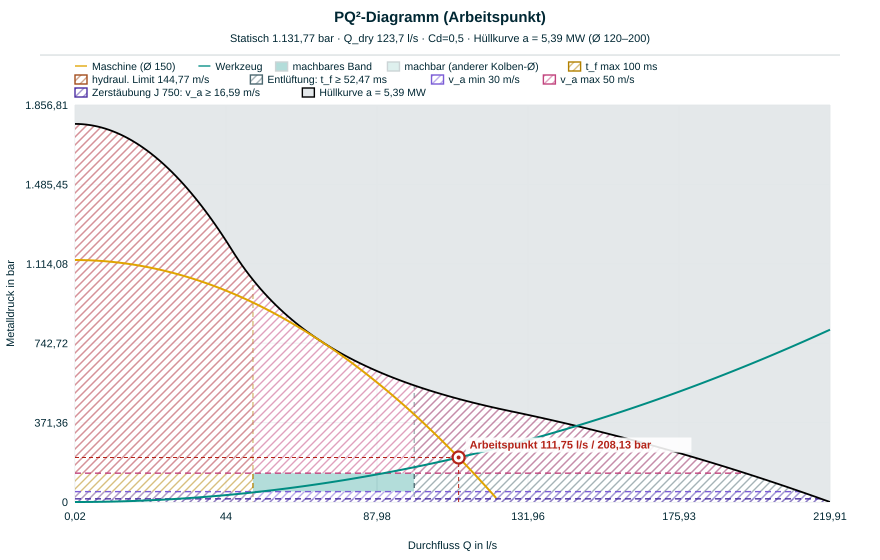

1. Warum ein gemeinsames Bild?
Während der Formfüllung verhandeln zwei Parteien miteinander: Die Maschine kann einen Volumenstrom Q nur bis zu einer bestimmten Druckhöhe liefern — je schneller der Kolben, desto weniger hydraulische Reserve bleibt. Das Werkzeug verlangt für einen Volumenstrom Q einen Druck, der am Anschnitt in kinetische Energie der Schmelze umgesetzt wird. Der Prozess stellt sich dort ein, wo Angebot und Nachfrage sich treffen: im Arbeitspunkt.
Beide Zusammenhänge sind quadratisch in Q. Trägt man den Druck p deshalb nicht über Q, sondern über Q² auf, werden aus zwei Parabeln zwei Geraden — das ist der ganze Trick des PQ²-Diagramms. Schnittpunkte von Geraden lassen sich zeichnen, ablesen und diskutieren.
Das vollständige Bild hat vier Elemente, und alle vier stehen so auch im Dashboard: die Maschinenlinie des gewählten Kolbens, die Werkzeuglinie des Anschnitts, die Hüllkurve als Grenze dessen, was die Maschine mit irgendeinem Kolben erreicht — und das grüne machbare Band, in dem alle Prozessgrenzen gleichzeitig erfüllt sind.
2. Die Maschinenlinie
Die Maschinenlinie beschreibt, was der Schusszylinder mit dem montierten Kolben liefern kann. Ihr Ursprung liegt in der Hydraulik: Der Akkumulator stellt den Druck Pacc, Drosselverluste wachsen quadratisch mit der Kolbengeschwindigkeit, und das Kräftegleichgewicht am Kolben übersetzt den Hydraulikdruck über das Flächenverhältnis auf die Schmelze:
Ohne Bewegung (Q = 0) steht der volle statische Gießdruck p0 = FG/AK an; beim Trockenschuss (kein Widerstand) erreicht der Kolben vdry — das entspricht Qdry = AK·vdry, und für das Werkzeug bleibt kein Druck übrig. Beide Achsenabschnitte stecken in den Maschinen-Presets.
Wichtig: Jeder Kolben-Ø hat seine eigene Maschinenlinie. Ein kleinerer Kolben hebt p0 (weniger Fläche, mehr Druck) und senkt Qdry — die Linie kippt steil. Ein größerer Kolben macht das Gegenteil.
3. Die Werkzeuglinie
Auf der Werkzeugseite wirkt der Anschnitt als Drossel. Nach Bernoulli/Torricelli setzt der Druck vor dem Anschnitt die Schmelze auf die Anschnittgeschwindigkeit va = Q / (cd·Aa):
Die Anschnittfläche steht im Nenner im Quadrat: Ein größerer Anschnitt kippt die Werkzeuglinie flach (mehr Volumenstrom, weniger Anschnittgeschwindigkeit), ein kleinerer stellt sie steil. Die Maschinenlinie bleibt davon unberührt — Anschnittauslegung und Maschinenwahl lassen sich im Diagramm getrennt diskutieren.
4. Der Arbeitspunkt
Der Arbeitspunkt ist der Schnitt beider Kennlinien, pM = pW. Auflösen nach Q ergibt in geschlossener Form:

Liegt va außerhalb des Zielbands oder tf über der zulässigen Füllzeit, wird am Anschnitt oder an der Maschine gedreht — und das Diagramm zeigt sofort, welche der beiden Linien sich bewegt.
5. Die Hüllkurve
Die Maschinenlinie gilt für einen Kolben. Was kann die Maschine über alle Kolben hinweg? Die Antwort steckt im Akkumulator: Während der Einspritzphase gibt er näherungsweise eine konstante Leistung an die Schmelze ab. Druck mal Volumenstrom ist Leistung — die Grenze aller erreichbaren Betriebspunkte ist deshalb eine Hyperbel, die Hüllkurve:
Die Konstante a hat die Einheit einer Leistung — im Dashboard steht sie als KPI („Hüllkurven-Konstante a", mit den Standardwerten 5,39 MW) und in jeder Diagramm-Unterzeile. Jede Kolben-Maschinenlinie berührt die Hüllkurve in genau einem Punkt, bei vp = vdry/√3 und p = ⅔·p0. Oberhalb liegt kein erreichbarer Punkt — egal welcher Kolben montiert ist. Genau das zeigt die graue Fläche „unerreichbar (alle Ø)" im Diagramm; außerhalb der Berührpunkte von Ø min und Ø max folgt ihre schwarze Frontlinie der Parabel des Grenz-Kolbens.

Maschinenlinie = was der gewählte Kolben kann. Hüllkurve = was die Maschine überhaupt kann. Dazwischen liegt die Freiheit der Kolbenwahl — im machbaren Band heißt dieser Bereich „machbar (anderer Kolben-Ø)" und ist heller gefüllt.
6. Das machbare Band
Prozessgrenzen sprechen nicht in Druck und Volumenstrom, sondern in Füllzeit und Anschnittgeschwindigkeit. Um sie ins Diagramm zu bekommen, braucht es nur zwei Umrechnungen:
Füllzeit-Grenzen werden damit zu vertikalen Linien auf der Q-Achse (mehr Zeit = weniger Volumenstrom). Geschwindigkeits-Grenzen werden zu horizontalen Linien auf der Druckachse — und zwar unabhängig von der Anschnittfläche: p(va) ist schlicht der Staudruck, den es braucht, um die Schmelze auf va zu bringen. Zusammen entsteht ein Rechteck; geschnitten mit der Hüllkurve bleibt das grüne machbare Band — dieselbe Darstellung wie im (φ, λ)-Auslegungsfenster.

7. Die vier Grenzen
Hinter den vier Seiten des Bands steckt jeweils andere Physik — die Namen entsprechen der Diagramm-Legende:
„Entlüftung: t_f ≥ …" — die minimale Füllzeit. Ein Entlüftungskanal ist strömungstechnisch eine Düse zwischen Kavität und Umgebung. Ab einem kritischen Druckverhältnis erreicht die Luft dort Schallgeschwindigkeit und der Massenstrom sperrt — schneller kann die Form nicht entlüften, kürzere Füllzeiten schließen Luft ein. Gerechnet wird mit Entlüftungsfläche und maximal zulässiger Luftgeschwindigkeit: tf ≥ VLuft/(Aent·vLuft,max).
„t_f max" — die maximale Füllzeit. Dauert die Füllung zu lange, erstarrt die Front, bevor die Form voll ist: kalte Läufe, Bindefehler, schlechte Oberflächen. Das Limit kommt aus der NADCA-Füllzeitformel über Wandstärke und Temperaturen — dieselbe Rechnung wie im Diagramm „Empfohlene Füllzeit".
„v_a min" und „Zerstäubung J" — die minimale Anschnittgeschwindigkeit. Zu langsame Schmelze füllt als kompakter Strahl: Porosität und Kaltfluss. Das Dashboard zeigt zwei Untergrenzen: das NADCA-Zielband (v_a min) und das empirische Atomisierungs-Kriterium va1.71·ep·ρ ≥ J (inch-pound-Einheiten; J > 750 gilt als konservativ). Die schärfere von beiden begrenzt das Band.
„v_a max" — die Erosionsgrenze. Zu schnelle Schmelze wäscht die Form rund um den Anschnitt aus und begünstigt Kleben. Diese Grenze ist Erfahrungswissen: für Aluminium etwa 41 m/s, je nach Quelle bis ≈ 65 m/s.
Dazu kommt das „hydraul. Limit": die Anschnittgeschwindigkeit, die der statische Druck p0 überhaupt liefern kann — va ≤ cd·√(2·p0/ρ).
8. Spielraum für den Anschnitt
Im Q²-Plan ist die Werkzeuglinie eine Ursprungsgerade, deren Steigung allein von der Anschnittfläche abhängt. Das Band begrenzt die zulässigen Flächen deshalb von zwei Seiten: Die steilste zulässige Werkzeuglinie läuft durch die Ecke (tf,max, va,max) — die kleinste Fläche. Die flachste durch (tf,min, va,min) — die größte:
Je größer das grüne Band, desto mehr lässt sich später im Betrieb mit leicht änderbaren Größen erreichen (Leistungsstufe, Metalldruck, Temperatur), ohne schwer änderbare anzufassen (Kolben-Ø, Anschnittfläche, Entlüftung — alles, was Werkzeug- oder Maschinenumbau bedeutet). Die Spanne [Aa,min, Aa,max] rechnet der Abschnitt „Mathematik & Herleitung" unter dem Diagramm live mit.